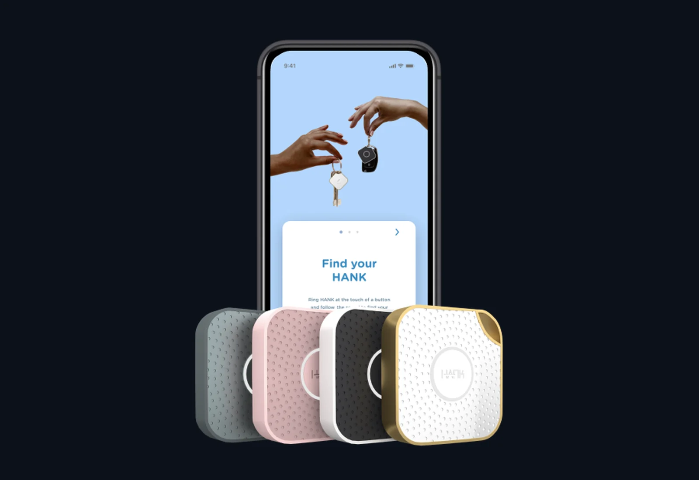
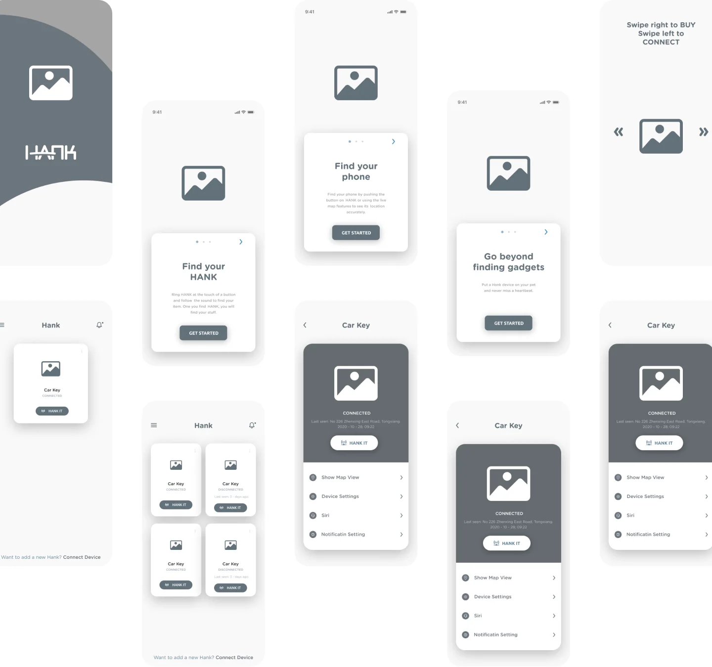
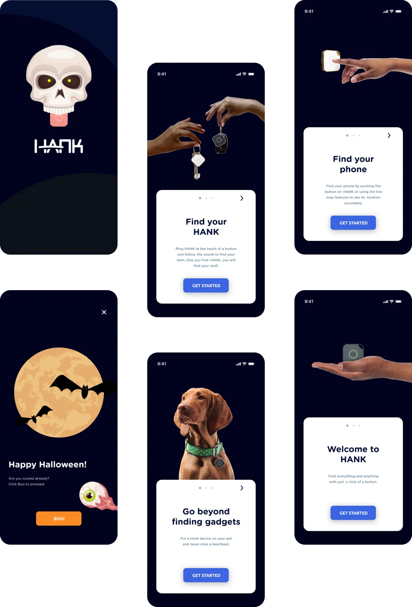
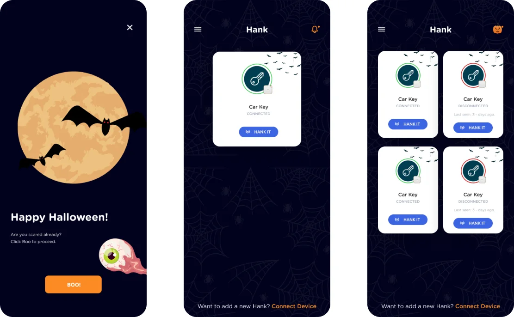
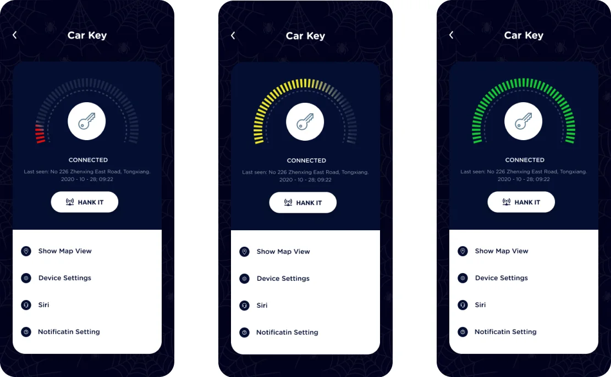
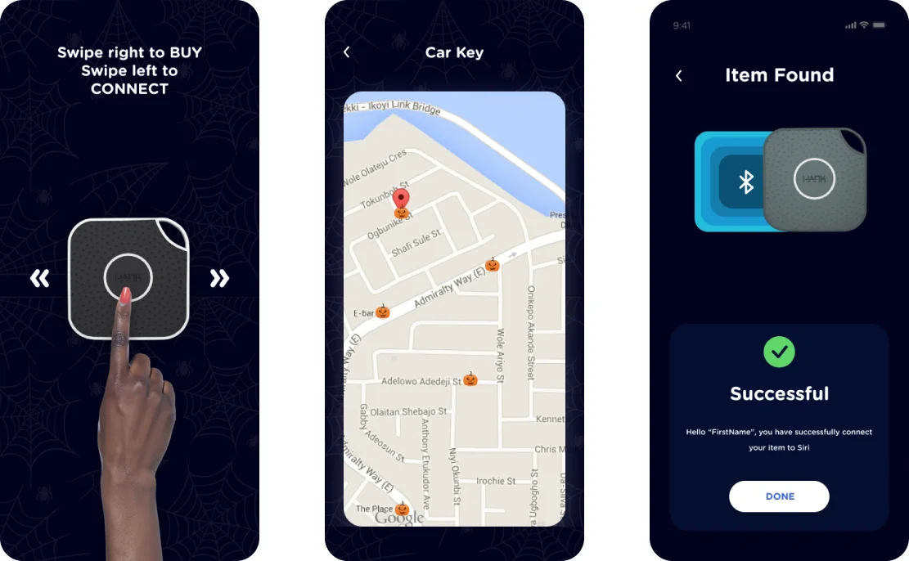

Hank · Consumer IoT
A tracker app for things that go missing
Hank is a small Bluetooth and GPS tracking device. Clip it to your keys, wallet or pet, and the Hank mobile app helps you find them in no time, with a Halloween theme for the season.
- Product
- Hank tracker and app
- Role
- Senior Product Designer
- When
- 2020 – 2022
- Platform
- iOS
- Scope
- Personas, wireframes, style guide, UI

Overview
Built for everyone, not a niche
The more practical an app is, the more precise and easy to use it needs to be. Some apps serve a narrow, specialist audience. Hank doesn't: it's meant for a wide audience with different backgrounds, levels of education and comfort with technology.
That shaped the interface. It had to be bright and visually distinctive, but never at the cost of confusing anyone.
The problem
Find the problem, explore the solutions
Time is invaluable and shouldn't be wasted. But our minds are so busy with everyday life that we forget the little things: switching back to the grid after turning off the generator, switching off the AC before leaving the house, taking our chargers to work, packing a spoon with lunch.
We also forget where we dropped things when we get home after a long, tiring day: keys, wallets, purses, phones, bags, remotes. Pets don't help either, hiding in hard-to-spot corners, usually right after they've caused some chaos.
We spend time we could use well looking for these things, usually when we have the least time to spare. Often we give up and replace them, which costs a fortune.
Value propositions
- Save time. Find items faster, and make finding them easy.
- Save money. One subscription covers multiple devices on the corporate plan.
- Save effort. Nothing gets lost with Hank.
Who it's for
User personas
Two personas, both living in Lagos, kept the design grounded in the people who'd use it.
Jones, 26
Profile. Works remotely for a US-based design agency. He doesn't like to cook and enjoys going out to buy food, because that's how he gets to spend time outside his apartment.
Pain points. He doesn't see much value in most products on the market, and finds a lot of them overly complicated to use.
Goals. To own a fully remote design agency. He has already started the groundwork and hopes to launch soon.
Likes. Going out every weekend to cool off, and shopping online.
Cindy, 34
Profile. A banker who would love to stay organised, but can't seem to keep track of where she puts things. Her children scatter things all over the house and even lose their own items at school.
Pain points. She spends too much time remembering and searching for her wallet, keys and other things. She wishes she had more spare time to rest and do chores, especially grocery shopping.
Goals. To become a branch manager at a commercial bank, and in time move into investment banking.
Likes. Drinks with friends at the weekend, time with her kids, and shopping.
Structure
Wireframes
Wireframes set out the skeleton of the app, arranging elements to best serve each screen's purpose: onboarding, the home screen with connected devices, and the device detail page.

Visual language
Style guide
A small set of standards for type and colour: a deep night-sky navy for Halloween, a confident blue for actions, and a pumpkin orange for seasonal moments.
Typography
Gotham Rounded throughout, for a friendly, approachable feel.
Colour palette
- Primary#01021D
- Secondary#3B64E0
- Text#0C111A
- Text 2#999999
- Accent#FC8B24
- Surface#040F32
Visual design
The finished screens
Onboarding
A Halloween splash screen leads into short onboarding cards, each showing one thing Hank can do: find your keys, find your phone, and keep track of your pet.

Home and devices
The home screen lists every connected Hank with its status and a one-tap "Hank it" button to make it ring.

Each device screen shows a signal gauge that fills from red to green as you get closer, with the last place it was seen and quick links to the map, settings, Siri and notifications.

Connecting and finding
Swipe right to buy a Hank or left to connect one, follow it on the map, and get a clear confirmation when the item is found.
